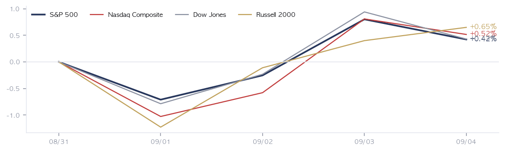
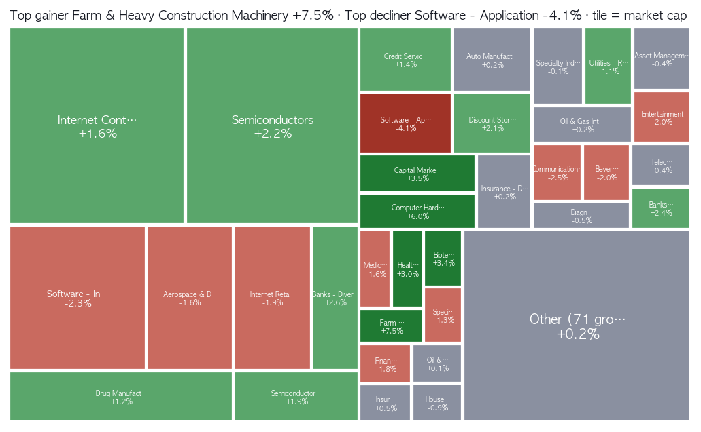
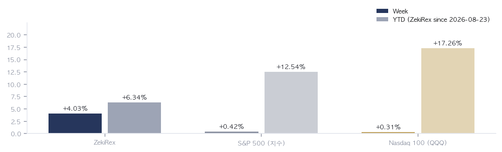

|
ZekiRex™ Apex US Weekly 8/31~9/4
What the week left · 1/2
data as of the 9/4 close |
ZekiRex™ |
|
|
The week in one sentence. Read only the index and nothing happened: the S&P 500 added 0.42% across five sessions and the Russell 2000 stopped at 0.65%. Split it by industry and the picture changes — application software lost 4.10% while farm and heavy construction machinery gained 7.47%. Before the New York open on 9/4 the August employment report turned rate-cut expectations into hike bets, and in the same week a wider sanctions net pushed WTI to $91.5 a barrel. When the price of money and the price of fuel rise together, whatever is valued on distant future profits is repriced first. The index sat still not because the market was quiet, but because the two halves cancelled each other out. |
| The five things that mattered this week | The five events of the week that touched money. Each one runs: what happened, why, and what it means. | 1 | 162,000 August jobs, and the end of the cut trade FACT August nonfarm payrolls rose by 162,000, more than three times the Dow Jones survey's 53,000. Unemployment held at 4.1%, and July was revised up by 44,000, turning a reported decline into a gain. (Reuters, CNBC) WHY A labour market that has not cooled removes the case for easing. The 10-year Treasury closed the week at 4.78%. The Wall Street Journal and Barron's both read the same release as fuel for hike bets — a day after Seoul's front pages led on Governor Waller signalling a hold. ACTION — The further into the future a company's profits sit, the more its price depends on the discount rate. If you hold names like that, adding before the 9/11 consumer price index is a bet on a single release. The same asymmetry runs the other way: the names already marked down are the ones that snap back hardest if that print comes in cool. | | 2 | The White House demanded cuts; the bond market priced the opposite FACT President Trump repeated a threat to halt trade with major partners while demanding that the central bank lower borrowing costs. (CNBC, South China Morning Post, The Straits Times) WHY In the same week the market priced the reverse. When political demands and bond prices diverge, the gap itself becomes the volatility. The Financial Times reported that the Treasury sell-off is pressing hardest on the weakest US borrowers. ACTION — Rate-sensitive assets — REITs, high dividend payers, low-rated corporate credit — move on the yield actually paid at issue, not on the speech. There is one thing to watch: whether the threat turns into an actual tariff or import restriction, or stays words. | | 3 | Wider Iran pressure takes WTI to $91.5 FACT The Treasury sanctioned a Turkish bank for moving money for Iran's military. WTI crude rose 6.67% on the week and is up 59.60% since the start of the year. (CNBC, Semafor) WHY This move came from blocked supply, not from demand. Crude reaches the inflation data with a lag of a couple of months, so the 9/11 print will not yet carry all of it — and it is already being used as a reason to wait on easing. ACTION — If you own refiners or energy, that distinction is the whole story: a price lifted by blocked supply gives it all back at the same speed when the blockage lifts. Of the 62 names that cleared our standard this week, twelve are oil and gas and only two are semiconductors — the screen points the same way. | | 4 | Software finished last of 105 industry groups FACT Application software fell 4.10% on the week, last of 105 groups. Credo Technology lost 24.59%, Guidewire Software 20.67% and MongoDB 18.67%. WHY Software repricing in a week of rising yields is a familiar picture. What was different is that infrastructure software, several times larger by market value, fell 2.27% too — which says the change was in how these companies are valued, not in any one set of results. In the same week Nvidia signed its agreement to buy Hugging Face, with the filing putting the amount payable to stockholders at about $11.9 billion. ACTION — If you hold software, the thing to watch over the next few weeks is the yield curve rather than the earnings calendar. Whether the money going into artificial intelligence is reaching software revenue gets answered by Oracle's results on 9/10. Until then the bond market is setting the price of this group. | | 5 | Lululemon lost 20% in a day: a crack in the consumer FACT Lululemon fell 20% on 9/4 alone after cutting both quarterly results and its full-year view — 16.34% across the week. It was the second cut to the revenue forecast in months. (CNBC, Globe and Mail) WHY Apparel retail lost 2.82% on the week. Jobs holding up while consumer companies cut guidance is a specific combination: the problem is not wages running short but companies unable to raise prices. ACTION — If you own consumer names, read the margin guidance before the revenue growth line. While employment holds, borrowing costs will not fall easily, and in that stretch the companies that cannot pass costs through are the ones that surface first. This season's cuts have come mostly from the margin line. |
|
| The week, closed | | READING | FRIDAY CLOSE | WEEK | YTD | | S&P 500 | 7,719 | +0.42% | +12.54% | | Nasdaq Composite | 26,507 | +0.52% | +14.08% | | Dow Jones | 53,414 | +0.43% | +10.40% | | Russell 2000 | 2,976 | +0.65% | +18.64% | | Bitcoin | $79,675 | +1.42% | -10.21% | | Dollar Index | 99.2 | -0.27% | +0.75% | | UST 10-Year | 4.78% | +0.03%p | +0.60%p | | WTI Crude | $91.5 | +6.67% | +59.60% | | Gold | $4,430 | -0.03% | +2.67% |
Weekly moves run from the 8/31 New York close to the 9/4 New York close, five sessions; the year-to-date column is measured on the same close series from the year's first session. One thing comes out of the table: all four indexes cluster between 0.4% and 0.7%, while the average stock in our tracked list managed 0.13%. That gap says a small number of very large companies did the lifting. Read the industry table below this one — it is where this week's information is. |
| What moved | 1033 measured of 1039 tracked - full-week traded names only Best of the week | SMMT SMMT | +29.26% | | BE BE | +22.57% | | CNH CNH | +21.72% | | IREN IREN | +20.38% | | HOOD HOOD | +16.51% | | DELL DELL | +14.94% | | CBRS CBRS | +14.01% | | AGCO AGCO | +12.75% | | BBY BBY | +12.63% | | AUR AUR | +12.61% |
| Worst of the week | CRDO CRDO | -24.59% | | GWRE GWRE | -20.67% | | FICO FICO | -18.74% | | MDB MDB | -18.67% | | PATH PATH | -18.64% | | LULU LULU | -16.34% | | CIEN CIEN | -16.14% | | ADSK ADSK | -15.72% | | CDNS CDNS | -13.60% | | PANW PANW | -12.79% |
|
Best and worst on 8/31-9/4 New York closes, restricted to the 1,033 names that traded every session. The dividing line this week was not growth against value but physical against not: the winners burn electricity and ship goods — power producers, machinery, steel, servers — while the losers are priced off profits still years away. Dell sits in the left column and is one of ours. That does not make the list any more correct. |
| Our week | | NAME | FRIDAY | WEEK | OPEN P/L | STOP | RISK BUFFER | NEXT | | ASML ASML | $1,714.88 | +1.11% | -2.77% | $1,622.66 | +5.7% | ER 10/14 | | MPC MPC | $388.90 | +0.49% | +1.54% | $352.36 | +10.4% | ER 11/3 | | MU MU | $1,016.59 | +6.04% | +5.15% | $889.44 | +14.3% | ER 9/30 | | DELL DELL | $524.14 | +14.94% | +18.56% | $406.71 | +28.9% | ER 11/27 |
Four positions: ASML (semiconductor equipment), Micron (MU, memory), Dell Technologies (DELL, servers and hardware) and Marathon Petroleum (MPC, refining). The book returned 4.03% on the week against 0.42% for the S&P 500 over the same days, and most of that difference came from Dell alone. The four won together because all four rest on one story — rising borrowing costs and rising crude — which means they will also lose together in the week that runs the other way. The narrowest distance left to a stop is ASML's, at 5.68%. There was one exit this week: Allient (ALNT) hit its stop on the 9/1 New York close and was closed at a 9.8% loss against the $95.84 entry. The rule sets the line at 8% below the entry, but the signal is confirmed on a close, so the fill can sit below it. The stock then recovered and finished Friday at $94.62 — on this occasion the stop rule cost money, and we would rather say so than leave it out. It is the only closed trade since the book opened, and it was a loss. Cash is effectively nil. |
|
|
What next week needs · 2/2
data as of the 9/4 close |
ZekiRex™ |
|
|
| Also worth knowing | | Norway's fund proposes cutting Treasuries · The manager of Norway's government fund proposed a sharp cut to its US government bond holdings, with Fortune putting the size at $80 billion. No approval date is set. (CNBC · Globe and Mail · Fortune) → Less demand at the long end raises the floor under US borrowing costs, adding a layer to the force that pressed software this week. | | Bank of Japan bets and a surging yen · The yen surged on 9/3 on bets that the Bank of Japan will tighten. The decision itself has not come. (The Guardian · Nikkei Asia) → A stronger yen is one route by which money leaves risk assets worldwide — a second weight on US growth names, separate from domestic rates. | | Volkswagen doubles its job cuts · The Volkswagen board approved doubling its planned workforce reduction to 100,000. The programme runs for years and has no completion date. (WSJ US Business · Daily Maverick) → A figure that makes one look again at the size of European industrial demand, and a sign that the machinery and parts strength of this week leans American. | | Korea's cumulative exports reach $709.4 billion · Korea's cumulative exports reached $709.4 billion by early September, passing last year's full-year total, with a $1 trillion year now projected. The annual figure settles at year-end. (Yonhap KR · Chosun Ilbo · Money Today) → For a US investor this works as a ruler for world manufacturing demand, and it points the same way as this week's strength in semiconductors and machinery. | | Twenty-eight outlets were read for the week, from 26 independent publishers. Where an item rests on a single house, that house is named in the line. |
| Korea and the US: The road from New York to Seoul again runs through the cost of money. The tilt was made in New York on 9/4, and Seoul had already closed its week before that. With US markets shut on 9/7, even if Seoul prices the number on Monday there is no New York session to answer it — the gap between pricing and confirmation widens by a day. |
 Five lines: the four indexes and Bitcoin, rebased to 100 at the 8/31 New York close. Two closing points read as a quiet week; the path shows ground lost into Tuesday and won back on Thursday and Friday, without breaking on 9/4. Until Oracle reports on 9/10, rates own the slope. |
 Ten up and ten down among the 1,033 names that traded all five sessions; the list averaged 0.13%. The upper half sells goods and electricity - Summit Therapeutics, Bloom Energy, CNH Industrial - and the lower half is a queue of software. This was a week decided by industry, not by the index. |
 Tile size is the industry's market value; deep green is up, deep red is down. The return champion is heavy machinery at 7.47%, but its tile is small: the weight moved in the large squares, where semiconductors rose and infrastructure software fell. The next candidates come out of the hot squares. |
 Top and bottom ten of 105 groups; each group's move is the simple average of its members' returns. The five at the top - machinery, independent power, computer hardware, steel, electrical equipment - either consume electricity or sell the equipment that does. Application software finished last. |
 Left bar: the 8/31-9/4 week. Pale right bar: year-to-date, meaning the S&P 500 at 12.54% and the Nasdaq 100 at 17.26% on the QQQ ETF. The ZekiRex bar runs from the book's start on 8/23, so it is a different yardstick. Over identical days since 8/24: book 6.34%, S&P 500 0.86%, QQQ 1.79%. |
| The five things to know for next week | Five that follow from this week, each with what to watch. | 1 | 9/11 consumer price index: the test of this week's tilt FACT The August consumer price index lands 9/11 at 08:30 ET. It is the last inflation reading before the 9/15-16 meeting. WHY This print either confirms or reverses the tilt the employment report created. The crude move is not yet fully in the data, so even a cool reading here leaves something for next month's. ACTION — For growth names and software, this single morning sets the discount rate for the weeks that follow. Moving a position size beforehand is a bet on one release; moving afterwards means paying the new price. Deciding which of those two risks you would rather carry is the actual decision. | | 2 | 9/10 Oracle results: does AI money reach software revenue? FACT Oracle reports first-quarter results on 9/10 at 17:00 ET. WHY This week's software decline came from the discount rate rather than from results. Oracle tests that distinction: if cloud revenue is growing alongside the spending on artificial intelligence capacity, then the software selloff is purely a rates story. ACTION — If you own software, read the cloud segment's growth rate and the remaining performance obligation before the headline revenue. If those two roll over, this week's decline was about demand rather than rates, and the whole group needs looking at again. | | 3 | 9/7 Labor Day: confirmation slips by a day FACT US markets are shut for Labor Day on Monday 9/7. The week's first session is Tuesday 9/8. WHY The session that would confirm the tilt from the employment report opens a day late. Asia and Europe price it first, so Tuesday's New York open carries three days of news at once. ACTION — Carrying weekend risk is, this once, a three-day decision rather than a two-day one. Names that react to geopolitical news — anything tied to crude above all — have no market to price them for those three days. | | 4 | The lag between crude and the inflation data FACT WTI has climbed to $91.5 a barrel since the start of the year, and this week's leg came from the widening Iran sanctions. WHY Refined product prices follow crude with a lag of a couple of months, so this move shows up more in the October and November data than in the 9/11 print. The force delaying any easing arrives twice, not once. ACTION — If you own refiners this is a widening-margin stretch, but the margin lasts only as long as the blockage does. On the other side, airlines, freight and chemicals — the buyers of fuel — need their fourth-quarter cost assumptions recalculated. | | 5 | Anthropic's listing prep: where growth money goes next FACT The Financial Times reported that Anthropic is close to handing the top roles in a listing talked about at $2 trillion to Morgan Stanley and Goldman Sachs. The timing has moved toward mid-October and no date is fixed. WHY A listing of that size pulls money out of the growth names already on the board. If that suction arrives while software is still marked down, the recovery takes longer. ACTION — For an account weighted toward growth, the moment a date is set in October is itself the checkpoint: the flows in the weeks either side of a listing show up in prices before the listing does. At this stage only the underwriter selection is settled and the calendar is not. |
|
| The week ahead | | Mon 9/7 | US markets closed for Labor Day With no regular session, the week's first checkpoint moves to Tuesday 9/8. | | Thu 9/10 | Oracle first-quarter results 17:00 ET. The next checkpoint on whether spending on artificial intelligence is reaching software revenue. | | Fri 9/11 | US August consumer price index 08:30 ET. The last inflation reading before the 9/15-16 meeting. |
|
Next week the data cross-examines the tilt this week created. The 9/11 inflation print either confirms or reverses it, and Oracle's results two days earlier narrow the cause of the software decline to rates or to demand. With markets shut on 9/7, both checkpoints land inside three days. Our rules do not change: no adds ahead of a release, and exits only from a stop or a trend signal. |
| Sources: Yahoo Finance, 16:00 ET · US Bureau of Labor Statistics · US Securities and Exchange Commission filing · Reuters, CNBC, The Wall Street Journal, Barron's, Bloomberg, the Financial Times, Semafor, the Globe and Mail · All ratings, ranks, industry aggregates and verdicts are ZekiRex's own |
|
This report is for information only and is not investment advice. ZekiRex™ Apex US runs a rules-based $10,000,000 simulated portfolio, unconnected to any real account or order. Investing carries the risk of loss. |
| This is the Rex Way, ZekiRex™ |
|